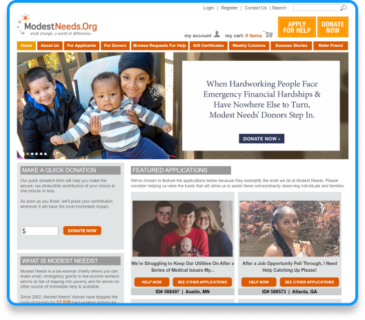
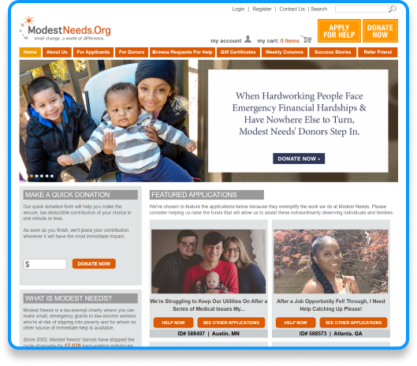
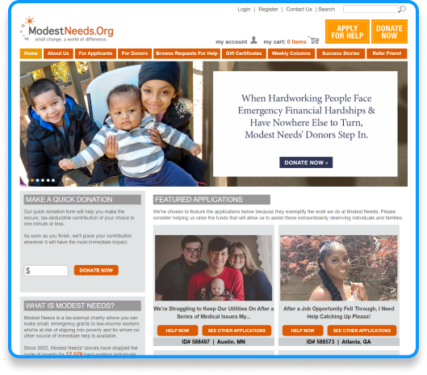

Problem Statement
Donors require a credible place to make their contributions so they feel motivated to not only solidify
an initial donation, but return to the site for future giving. How might we simplify this website to better focus on
the emotional aspect of our applicants while maintaining integrity and intuitive functionality / navigation?
 

Donors require a credible place to make their contributions so they feel motivated to not only solidify an initial donation, but return to the site for future giving. How might we simplify this website to better focus on the emotional aspect of our applicants while maintaining integrity and intuitive functionality / navigation?
